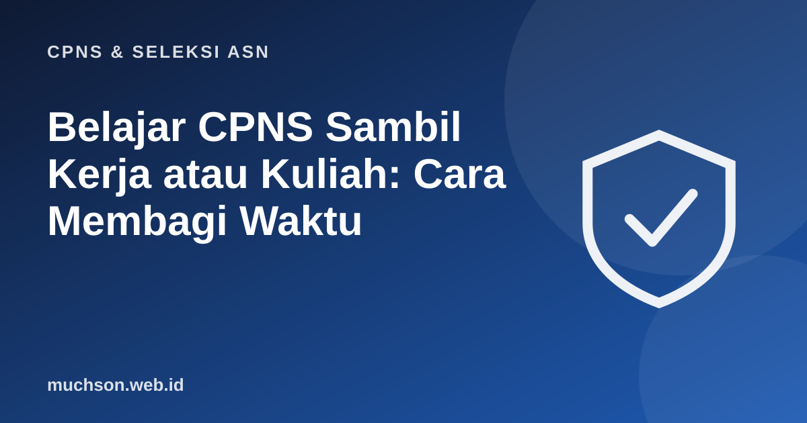

Beranda › Artikel › CPNS & Seleksi ASN
CPNS & Seleksi ASNBelajar CPNS Sambil Kerja atau Kuliah: Cara Membagi Waktu
Sebagian besar pelamar CPNS tidak punya waktu penuh untuk belajar: mereka bekerja, kuliah, atau mengurus keluarga. Kabar baiknya, penelitian tentang belajar menunjukkan sesi singkat yang tersebar justru unggul dibanding satu sesi panjang. Berikut cara menghitung jam yang realistis, dan jadwal contoh untuk karyawan dan mahasiswa.

Prinsipnya: sedikit tapi sering, dan berupa soal
Tinjauan Dunlosky dan rekan (2013) menilai dua teknik berguna tinggi: uji diri dengan soal dan belajar terdistribusi, yaitu menyebar sesi belajar dengan jeda. Hasil review Cepeda dan rekan (2006) tentang praktik terdistribusi juga mendukung manfaat jeda. Itu cocok dengan kondisi orang sibuk: 30 menit setiap hari lebih baik daripada lima jam hanya hari Minggu.
Deskripsi teks diagram
Maraton sekali seminggu
- 5 jam di hari libur
- Mudah lelah dan menunda
- Lupa cepat sampai pekan berikutnya
- Sulit diulang jika ada kegiatan mendadak
Sesi singkat tiap hari
- 30 sampai 60 menit, beberapa kali seminggu
- Lebih mudah menjadi kebiasaan
- Jeda antarsesi membantu daya ingat
- Fleksibel: bisa dicicil saat luang
Hitung jam belajar yang realistis
Jadwal contoh untuk karyawan
| Hari | Waktu | Kegiatan |
|---|---|---|
| Senin sampai Jumat | 30 menit pagi atau malam | 20 soal bab terlemah, bahas kesalahan |
| Senin sampai Jumat | 10 menit di perjalanan atau istirahat | Latihan harian atau ulang catatan kesalahan |
| Sabtu | 2 jam | Konsep bab yang sulit dan latihan campuran |
| Minggu | 1,5 jam | Tryout bertimer sesekali, lalu bahas |
Jadwal contoh untuk mahasiswa
| Hari | Waktu | Kegiatan |
|---|---|---|
| Hari kuliah | Satu sesi di sela kelas, 40 menit | Latihan soal; manfaatkan jeda antarkelas |
| Hari kuliah | 30 menit malam | Bahas kesalahan dan ulang konsep |
| Akhir pekan | 2 sampai 3 jam | Tryout bertimer dan evaluasi |
Deskripsi teks diagram
- Minggu 1 sampai 2: Mengukur dan membangun kebiasaan. Tryout awal; pilih jam belajar tetap
- Minggu 3 sampai 6: Pendalaman bab lemah. Soal per bab dengan pembahasan
- Minggu 7 sampai 9: Tryout rutin. Satu kali seminggu, bahas semua salah
- Minggu 10: Penyegaran. Kurangi beban baru; tidur cukup
Tips agar tahan lama
- Tetapkan jam tetap. Kebiasaan terbentuk lebih mudah pada waktu yang sama setiap hari (lihat artikel tentang membangun kebiasaan kecil).
- Pakai timer sesi pendek. Teknik Pomodoro membantu menjaga fokus pada waktu terbatas.
- Cicil di waktu luang. Latihan harian 10 soal cocok untuk perjalanan atau jeda makan siang.
- Pantau kemajuan, bukan hanya durasi. Catat skor per subtes tiap tryout.
- Jaga tidur dan makan. Belajar larut malam setiap hari menurunkan kualitas belajar.
- Siapkan rencana cadangan. Jika seminggu terlewat, lanjutkan dari rencana, jangan mulai ulang.
Latihan harian 10 soal di LolosSeleksi dirancang untuk orang sibuk, dan tryout SKD pertama gratis memberi titik awal yang jelas. Soal latihan disusun sendiri, bukan bocoran.
Tanya jawab
Cukupkah belajar 1 jam per hari sambil bekerja?
Kapan waktu terbaik belajar?
Apakah belajar akhir pekan saja cukup?
Bagaimana tetap belajar saat lelah?
Kapan mulai menyiapkan dokumen pendaftaran?
Referensi
- Dunlosky dkk. (2013), Improving Students' Learning With Effective Learning Techniques, Psychological Science in the Public Interest 14(1) (membuka tab baru)
- Cepeda dkk. (2006), Distributed Practice in Verbal Recall Tasks, Psychological Bulletin 132(3) (membuka tab baru)
- Roediger dan Karpicke (2006), Test-Enhanced Learning, Psychological Science 17(3) (membuka tab baru)
- Kompas.com, 16 November 2026: registrasi akun SSCASN CPNS 2026 dibuka, jadwal pendaftaran belum diumumkan (membuka tab baru)